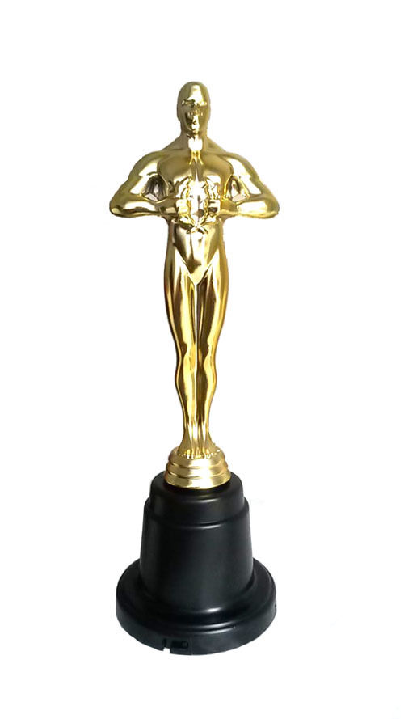

Premios
Premios Óscar

- (1999) Mejor Montaje para Zach Staenberg.
- (1999) Mejor Sonido para John T. Reitz, Gregg Rudloff, David E. Campbell, David Lee.
- (1999) Mejor Edición de Sonido para Dane A. Davis.
- (1999) Mejores Efectos Visuales para John Gaeta, Janek Sirrs, Steve Courtley y Jon Thum.
Premios Bafta
- (1999) Mejor sonido para David Lee, John T. Reitz, Gregg Rudloff, David E. Campbell, Dane A. Davis.
- (1999) Mejores efectos especiales visuales para John Gaeta, Steve Courtley, Janek Sirrs, Jon Thum.
Premios Saturn
- (1999) Mejor director y Mejor película de ciencia ficción para Andy Wachowski y Larry Wachowski.
Volver